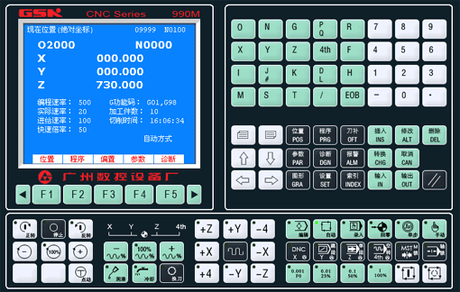
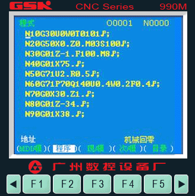
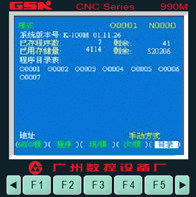
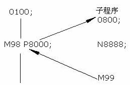
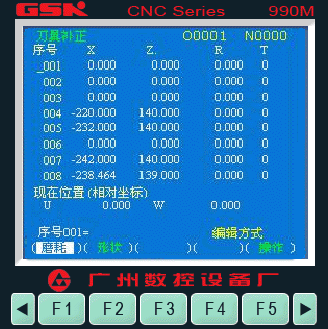

光标移动（CURSOR）
使光标左下移动一个区分单位
使光标向右移动一个区分单位
| GSK990M数控系统操作 |

| 按键介绍 |
数字/字母键用于输入数据到输入区域（如下图所示），系统自动判别取字母还是取数字。

页面切换键
显示，设定刀具磨耗补正和刀具形状补正。
显示，设定参数。
显示，当前绝对坐标值、相对坐标值和综合坐标值。
显示，当前加工程序和程序列表。
显示，各种诊断数据。
显示，错误及解除报警。
显示，图形参数。
显示，机床上所有参数。
显示，各种操作，编程信息。
翻页按钮（PAGE）
使LCD画面的页逆方向更换。
使LCD画面的页顺方向更换。
光标移动（CURSOR）
 使光标向上移动一个区分单位。
使光标向上移动一个区分单位。
 使光标向下移动一个区分单位。
使光标向下移动一个区分单位。
使光标左下移动一个区分单位
使光标向右移动一个区分单位
| 手动操作虚拟数控机床 |
手动返回参考点
在手动回零方式下，按 ，
， 直到X、Z轴坐标显示为“0.000”，即完成坐标回零，此时方可松开。
直到X、Z轴坐标显示为“0.000”，即完成坐标回零，此时方可松开。
注1：返回参考点结束时，返回参考点结束指示灯亮。
注2：返回参考点结束指示灯亮时，在下列情况下灭灯。
(1)从参考点移出时；
(2)按下急停开关 。
注３：参考点方向，主要参照机床厂家的说明书。
手动连续进给
(1)按下手动方式键  ，选择手动操作方式，键上指示灯亮。
，选择手动操作方式，键上指示灯亮。
(2) 选择移动轴 、
、  机床沿着选择轴方向移动。
机床沿着选择轴方向移动。
注：手动期间只能一个轴运动，如果同时选择两轴的开关，也只能是先选择的那个轴运动。如果选择2轴机能，可手动2轴开关同时移动。
(3)调节JOG进给速度
(4)快速进给


按下快速进给键时，同带自锁的按钮，进行‘开→关→开…’切换，当为‘开’时，位于面板 上部指示灯亮，关时指示灯灭。选择为开时，手动以快速速度进给。按此开关为ON时，刀具在已选择的轴方向上快速进给。
注1：快速进给时的速度，时间常数，加减速方式与用程序指令的快速进给（GOO定位）时相同。
注2：在接通电源或解除急停后，如没有返回参考点，当快速进给开关为ON（开）时，手动进给速度为JOG进给速度或快速进给，由参数（№012 LSO）选择。
注3：在编辑/手轮方式下，按键无效。指示灯灭。其它方式下可选择快速进给，转换方式时取消快速进给。
手轮进给
转动手摇脉冲发生器，可以使机床微量进给。
(1)按下手动方式下，选择手轮操作 键。
键。
(2)转动手轮
(3)选择移动量：按下增量选择移动增量，

注1：上表中数值根据机械不同而不同。
注2：手摇脉冲发生器的速度要低于5转/秒。如果超过此速度，即使手摇脉冲发生器回转结束了，但不能立即停止，会出现刻度和移动量不符。
注3：在手轮方式下，按键有效。
手动辅助机能操作
(1)手动换刀
手动方式下按下此键，刀架旋转换下一把刀（参照机床厂家的说明书）。
(2)冷却液开关
手动方式下，按下此键，同带自锁的按钮，进行‘开→关→开…’切换。
(3)主轴正转
手动方式下，按下此键，主轴正向转动起动。
(4)主轴反转
 手动方式下，按下此键，主轴反向转动起动。
手动方式下，按下此键，主轴反向转动起动。
(5)主轴停止
 手动方式下，按下此键，主轴停止转动。
手动方式下，按下此键，主轴停止转动。
⑹润滑控制
手动方式下，按下此键，同带自锁的按钮，进行‘开→关→开…’切换。
注：当没有冷却输出时，按下冷却键，输出相应的点。当有冷却输出时，按下冷却键，关闭相应的点。主轴正转/反转时，按下反转/正转键时，主轴也停止。但显示会出现报警06：M03，M04码指定错。在换刀过程中，换刀键无效，按复位（RESET）或急停可关闭刀架正/反转输出，并停止换刀过程。
在手动方式起动后，改变方式时，输出保持不变。但可通过自动方式执行相应的M代码关闭对应的输出。
同样，在自动方式执行相应的M代码输出后，也可在手动方式下按相应的键关闭相应的输出。
在主轴正转/反转时，未执行M05而直接执行M04/M03时，M04/M03无效，主轴继续主轴正转/反转，但显示会出现报警06：M03，M04码指定错。
复位时，对M08，M32，M03，M04输出点是否有影响取决于参数（P009 RSJG）。
急停时，关闭主轴，冷却，润滑，换刀输出。
运转方式
(1)存储器运转
(A) 首先把程序存入存储器中。
(B) 选择要运行的程序。
(C) 把方式选择于自动方式的位置。
(D) 按循环启动按钮。
 ：循环启动键、循环停止键
：循环启动键、循环停止键
按循环启动按钮后，开始执行程序。
(B)按[程序]键。
(C)按[翻页]按钮后，选择在左上方显示有‘程序段值’的画面。如下图：

自动运转的启动
存储器运转
1）选择自动方式；
2）选择程序；
3）按操作面板上的循环启动按钮。
自动运转的停止
使自动运转停止的方法有两种，一是用程序事先在要停止的地方输入停止命令，二是按操作面板上按钮使它停止。
（1）程序停（M00）
含有M00的程序段执行后，停止自动运转，与单程序段停止相同，模态信息全部被保存起来。用CNC启动，能再次开始自动运转。
（2）程序结束（M30）
(A)表示主程序结束。
(B)停止自动运转,变成复位状态。
(C)返回到程序的起点。
（3）进给保持
在自动运转中，按操作板上的进给保持键可以使自动运转暂时停止。

进给保持键 循环停止键
按进给保持按钮后，机床呈下列状态。
1) 机床在移动时，进给减速停止。
2) 在执行暂停中，休止暂停。
3) 执行M、S、T的动作后，停止。
按自动循环起动键后，程序继续执行。
（4）复位
复位键
用LCD/MDI上的复位键，使自动运转结束，变成复位状态。在运动中如果进行复位，则机械减速停止。
快速进给倍率
快速进给倍率选择键

快速倍率有F0，25%，50%，100%四挡。
可对下面的快速进给速度进行100%、50%、25%的倍率或者为F0的值上。
(1) G00快速进给；
(2) 固定循环中的快速进给；
(3) G28时的快速进给；
(4) 手动快速进给；
(5) 手动返回参考点的快速进给。
当快速进给速度为10米/分时，如果倍率为50%，则速度为5米/分。
注: 在自动/录入/手动方式下,按下键有效时,灯亮.松开键时,灯灭.
空运转
当空运转开关  为ON时，不管程序中如何指定进给速度，而以下面表中的速度运动。
为ON时，不管程序中如何指定进给速度，而以下面表中的速度运动。
|
程 序 指 令 |
|
快速进给 |
切削进给 |
|
手动快速进给按钮ON(开) |
快速进给 |
JOG进给最高速度 |
手动快速进给按钮OFF（关） |
JOG进给速度或快速进给 |
JOG进给速度 |
注：用参数设定（RDRN，№004）也可以快速进给。
进给保持后或者停止后的再启动
在进给保持开关为ON状态时，（自动方式或者录入方式），按循环启动按钮，自动循环开始继续运转。
单程序段
当单程序段开关  置于ON时，单程序段灯亮，执行程序的一个程序段后，停止。如果再按循环启动按钮，则执行完下个程序段后，停止。
置于ON时，单程序段灯亮，执行程序的一个程序段后，停止。如果再按循环启动按钮，则执行完下个程序段后，停止。
注1：在G28中，即使是中间点，也进行单程序段停止。
注2：在单程序段为ON时，执行固定循环G90，G92，G94，G70～G75时，如下述情况：
（…………………→快速进给，________________→切削进给）。
注3：M98 P＿；M99；及G65的程序段不能单程序段停止。但M98、M99程序段中，除N，O，P以外还有其它地址时，能让单程序段停止。
| 安全操作 |
急停（EMERGENCY STOP）
按下急停按钮  ，使机床移动立即停止，并且所有的输出如主轴的转动，冷却液等也全部关闭。急停按钮解除后，所有的输出都需重新起动。
，使机床移动立即停止，并且所有的输出如主轴的转动，冷却液等也全部关闭。急停按钮解除后，所有的输出都需重新起动。
一按按钮，机床就能锁住，解除的方法是旋转后解除。
注1：紧急停时，电机的电源被切断。
注2：在解除急停以前，要消除机床异常的因素。
1.超程
如果刀具进入了由参数规定的禁止区域（存储行程极限），则显示超程报警，刀具减速后停止。此时用手动，把刀具向安全方向移动，按复位按钮，解除报警。
| 程序存储、编辑 |
程序存储、编辑操作前的准备
在介绍程序的存储、编辑操作之前，有必要介绍一下操作前的准备。
(1)把程序保护开关置于ON上。
(2)操作方式设定为编辑方式  。
。
(3)按程序键后，显示当前程序，按两次下翻页键。
显示程序列表，编辑一个程序名后方可编辑程序。
选择一个数控程序
按 键，显示程序画面；
按编辑 键后，显示当前程序，按两次下翻页键，在程序列表中输入所要打开的程序名，如“O0002”再按键，即打开所要的程序。
键后，显示当前程序，按两次下翻页键，在程序列表中输入所要打开的程序名，如“O0002”再按键，即打开所要的程序。
删除一个数控程序
选择编辑方式，按 键，显示当前程序画面，按两次下翻页键，在程序列表中输入所要删除的程序名，按删除键即可。
顺序号检索
顺序号检索通常是检索程序内的某一顺序号，一般用于从这个顺序号开始执行或者编辑。
由于检索而被跳过的程序段对CNC的状态无影响。也就是说，被跳过的程序段中的坐标值、M、S、T代码、G代码等对CNC的坐标值、模态值不产生影响。因此，进行顺序号检索指令，开始或者再次开始执行的程序段，要设定必要的M、S、T代码及坐标系等。进行顺序号检索的程序段一般是在工序的相接处。
如果必须检索工序中某一程序段并以其开始执行时，需要查清此时的机床状态、CNC状态需要与其对应的M、S、T代码和坐标系的设定等，可用录入方式输入进去，执行进行设定。
检索存储器中存入程序号的步骤：
（a）把方式选择置于自动或编辑上；
（b）按 键，显示程序画面；
键，显示程序画面；
（c）选择要检索顺序号的所在程序；
（d）按地址键N；
（e）用键输入要检索的顺序号；
（f）按  光标键；
光标键；
（g）检索结束时，在LCD画面的右上部，显示出已检索的顺序号。
注1：在顺序号检索中，不执行M98 + + + +(调用的子程序),因此，在自动方式检索时，如果要检索现在选出程序中所调用的子程序内的某个顺序号，就会出现报警P/S(№060)。

| 数据的显示、设定 |
补偿量
(1)刀具补偿量的设定和显示（键）。
刀具补偿量的设定方法可分为绝对值输入和增量值输入两种。
(a)对值输入时
1)按 键；
2)因为显示分为多页，按翻页按钮，可以选择需要的页。

(b)增量值输入
1)把光标移到要变更的补偿号的位置（与（1）-3）的操作相同）。
2)如要改变X轴的值，键入U，对于Z轴，键入W。
3)用数据键键入增量值。
4)按 键，把现在的补偿量与键入的增量值相加，其结果作为新的补偿量显示出来。
例:已设定的补偿量5.678
键盘输入的增量1.5
新设定的补偿量7.178(=5.678+1.5)
注：在自动运转中，变更补偿量时，新的补偿量不能立即生效，必须在指定其补偿号的T代码被指行后，才开始效。